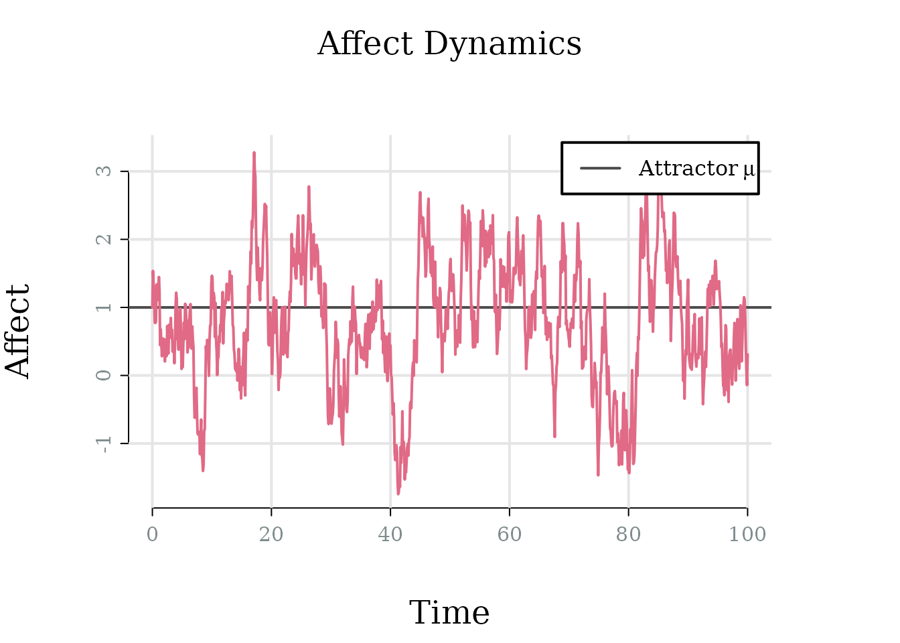
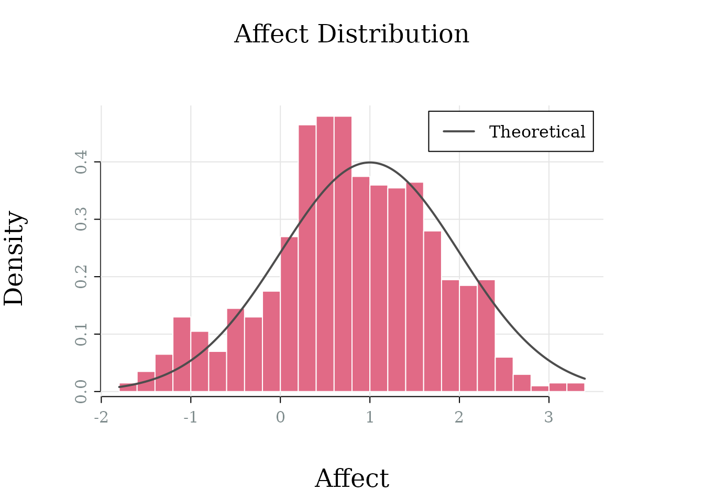
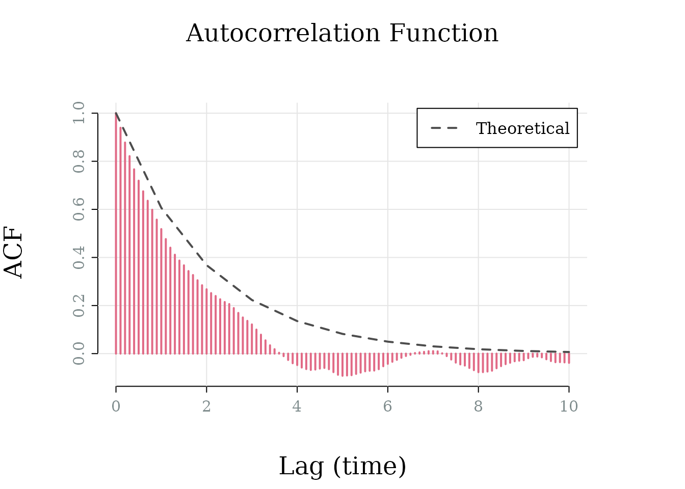
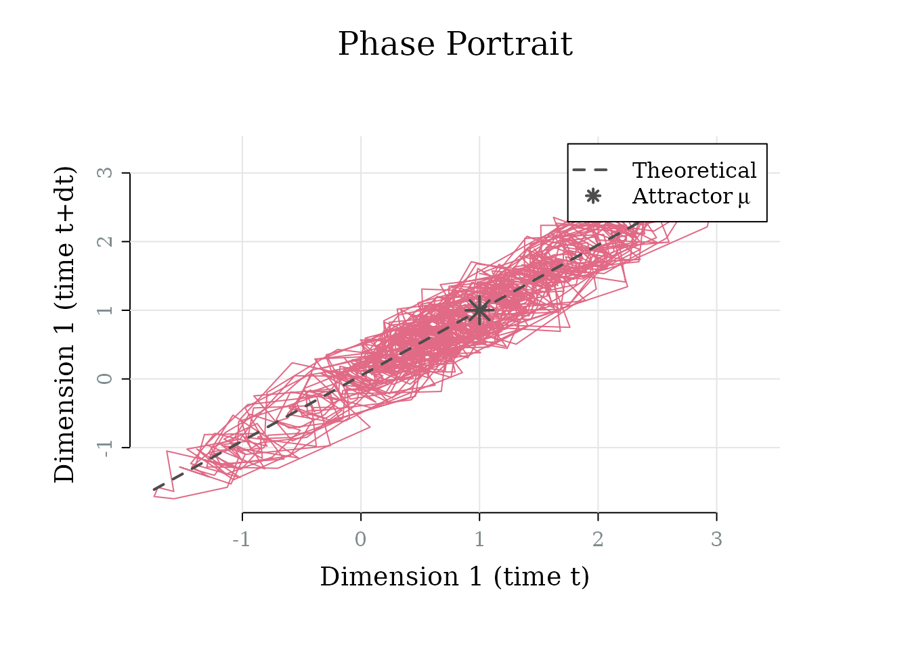
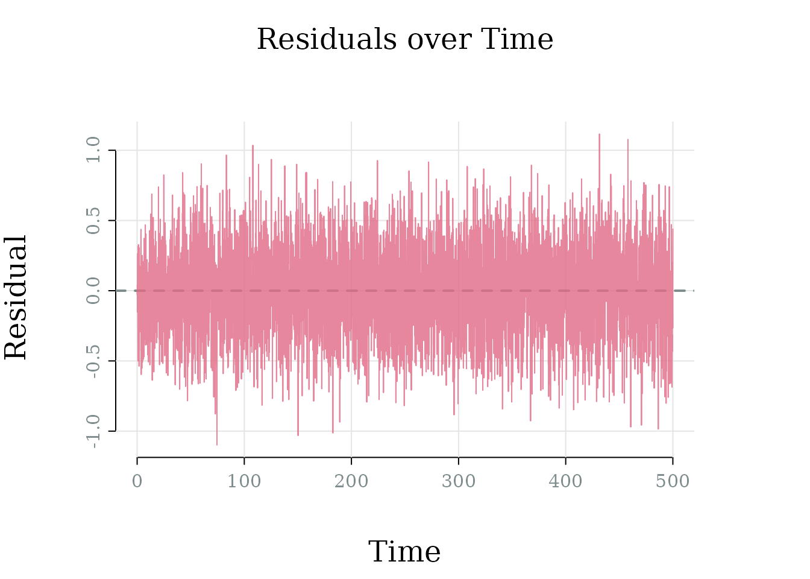

affectOU provides tools for modeling affect dynamics
using the Ornstein-Uhlenbeck (OU) process – a continuous-time stochastic
model that captures how emotions fluctuate around a baseline and return
to equilibrium over time.
This vignette walks through the package’s core functionality: simulating the OU process, computing theoretical quantities, and fitting unidimensional models to data. See Affect Characteristics Implied by the OU Process for visual demonstrations of the model’s qualitative behaviours and their psychological interpretations.
Creating an affectOU Model
One-Dimensional Model
For a univariate affect process, the stochastic differential equation of the OU process is:
Here, the parameters represent:
- θ (theta): Attractor strength—how quickly affect returns to baseline
- μ (mu): Attractor location—the baseline or “set point” of affect
- γ (gamma): Diffusion coefficient—the intensity of random perturbations
Create a simple one-dimensional model with default parameters:
model <- affectOU()
model
#>
#> ── 1D Ornstein-Uhlenbeck Model ─────────────────────────────────────────────────
#> dX(t) = θ(μ − X(t))dt + γ dW(t)
#>
#> θ = 0.500, μ = 0.000, γ = 1.000, σ = |γ| = 1.000Specify custom parameters to represent, for example, a process with moderate mean-reversion ( = 0.5), positive baseline ( = 1), and unit diffusion ( = 1):
model <- affectOU(theta = 0.5, mu = 1, gamma = 1)
model
#>
#> ── 1D Ornstein-Uhlenbeck Model ─────────────────────────────────────────────────
#> dX(t) = θ(μ − X(t))dt + γ dW(t)
#>
#> θ = 0.500, μ = 1.000, γ = 1.000, σ = |γ| = 1.000Multidimensional Models
The OU framework extends naturally to multiple affect dimensions (e.g., valence and arousal). For a d-dimensional process:
The default is a 2D model with uncoupled dynamics (diagonal and ) and identical parameters across dimensions:
model_2d <- affectOU(ndim = 2)
model_2d
#>
#> ── 2D Ornstein-Uhlenbeck Model ─────────────────────────────────────────────────
#> dX(t) = Θ(μ − X(t))dt + Γ dW(t)
#>
#> μ = [0.000, 0.000]
#>
#> Θ:
#> [,1] [,2]
#> [1,] 0.5 0.0
#> [2,] 0.0 0.5
#>
#> Γ:
#> [,1] [,2]
#> [1,] 1 0
#> [2,] 0 1
#>
#> Σ = ΓΓᵀ:
#> [,1] [,2]
#> [1,] 1 0
#> [2,] 0 1Create an uncoupled 2D model with different parameters for each dimension:
model_2d <- update(model_2d,
theta = diag(c(0.5, 0.3)), # Different regulation speeds
mu = c(0, 1), # Different baselines
gamma = diag(c(1, 0.8)) # Different diffusion levels
)Above, we use update() to
modify an existing model without recreating it from scratch. For coupled
dynamics where dimensions influence each other, use a non-diagonal
matrix:
Simulating Trajectories
simulate()
generates trajectories using Euler-Maruyama discretization:
sim <- simulate(model)Simulation settings can be customized:
sim <- simulate(
model,
nsim = 1, # Number of replications
dt = 0.01, # Integration time step
stop = 100, # Total simulation time
save_at = 0.1, # Output sampling interval
seed = 42 # For reproducibility
)Visualizing Simulations
Simulated data can be explored in various ways:
# Time series trajectory (default)
plot(sim)
# Distribution of affect values
plot(sim, type = "histogram")
# Autocorrelation function with theoretical overlay
plot(sim, type = "acf")
# Phase portrait (lag-1 relationship)
plot(sim, type = "phase")
Extracting Simulation Data
Simulated data can be extracted in different formats:
# Directly from the simulation object
data <- sim$data # 3D array (time × dimension × simulation)
# Using head() or tail()
head(sim, n = 3)
#> time dim sim value
#> 1 0.00 1 1 1.000000
#> 2 0.01 1 1 1.056281
#> 3 0.02 1 1 1.083456
# As a list of data frames (one per simulation)
sim_list <- as.list(sim)
head(sim_list[[1]], n = 3)
#> time dim1
#> 1 0.00 1.000000
#> 2 0.01 1.056281
#> 3 0.02 1.083456
# As a data frame (long or wide format)
sim_df <- as.data.frame(sim)
head(sim_df, n = 3)
#> time dim sim value
#> 1 0.00 1 1 1.000000
#> 2 0.01 1 1 1.056281
#> 3 0.02 1 1 1.083456Theoretical Quantities
Model Summary
Key theoretical properties can be computed with summary():
summary(model)
#>
#> ── 1D Ornstein-Uhlenbeck Model ─────────────────────────────────────────────────
#>
#> ── Dynamics ──
#>
#> Stable (node)
#>
#> ── Stationary distribution ──
#>
#> Mean: 1
#> SD: 1
#> Half-life: 1.386
#> Relaxation time (τ): 2The summary aggregates results from stability(),
stationary(),
and relaxation().
Each can also be called independently for more detail:
- Stability: Is the system stable? What type of dynamics does the system exhibit?
- Stationary distribution: Long-run mean, SD, and (for multivariate models) covariance
- Relaxation time: Time constant of perturbation decay ()
For multidimensional models, the model summary also includes coupling indicators:
summary(model_coupled)
#>
#> ── 2D Ornstein-Uhlenbeck Model ─────────────────────────────────────────────────
#>
#> ── Dynamics ──
#>
#> Stable (node)
#>
#> ── Stationary distribution ──
#>
#> Mean: [0, 1]
#> SD: [1.043, 1.167]
#> Half-life: [1.585, 2.988]
#> Relaxation time (τ): [2.347, 4.327]
#>
#> ── Structure ──
#>
#> Coupling: Dim 1 → Dim 2 (+), Dim 2 → Dim 1 (+)
#> Noise: independentExtract Equation
equation()
renders the model’s stochastic differential equation in multiple
formats, offering plain text, LaTeX, R expression, or code output.
cat(equation(model))
#> dX(t) = theta * (mu - X(t)) dt + gamma dW(t)
#>
#> where:
#> theta = 0.5
#> mu = 1
#> gamma = 1
#> sigma = 1With evaluated parameters:
Fitting Models to Data
fit()
estimates OU parameters from univariate time series using maximum
likelihood:
# Generate data from known parameters
true_model <- affectOU(theta = 0.5, mu = 0, sigma = 1)
sim <- simulate(true_model, dt = 0.01, stop = 500, save_at = 0.1)
# Extract the simulated data
data <- as.data.frame(sim)
# Fit the model
fitted <- fit(true_model, data = data$value, times = data$time)
fitted
#>
#> ── Fitted 1D Ornstein-Uhlenbeck Model ──────────────────────────────────────────
#> 5001 data points (dt ≈ 0.100)
#> θ = 0.443, μ = 0.019, γ = 1.002
#> Log-likelihood: -1237.784
#> RMSE: 0.310
# Residuals over time
plot(fitted, type = "residuals")
See plot() for
more details on available diagnostics and their interpretations.
Summary
The typical workflow starts with affectOU() to define
a model (1D or multidimensional), optionally adjusting parameters via update().
Trajectories are generated with simulate()
and visualized with plot().
Theoretical properties – stability, stationary distribution, and
relaxation time – are available through summary() and
its component functions. The model’s SDE can be rendered in several
formats via equation().
For empirical data, fit() estimates
parameters from univariate time series using maximum likelihood.